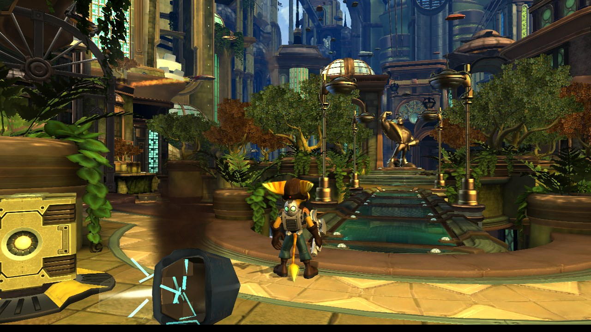
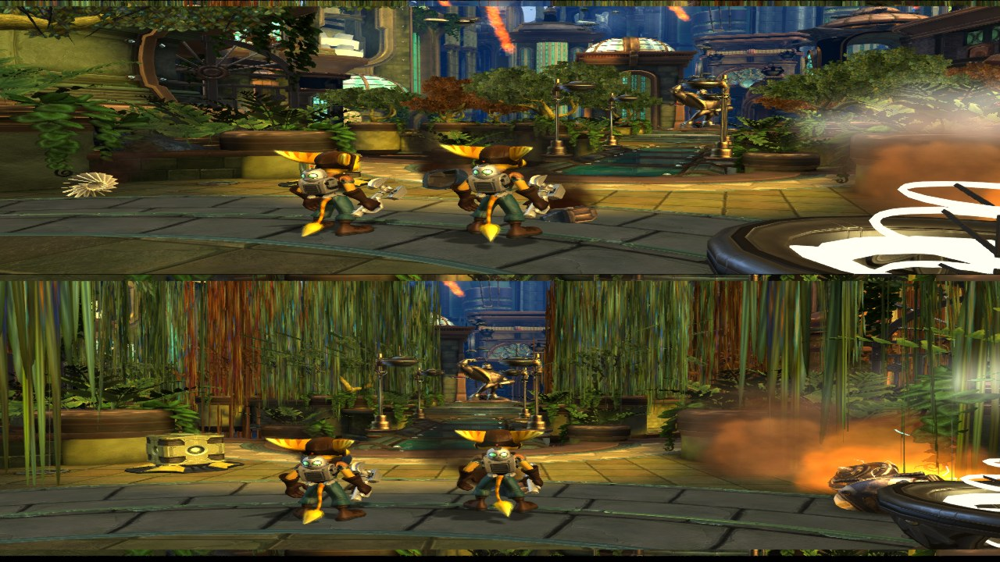
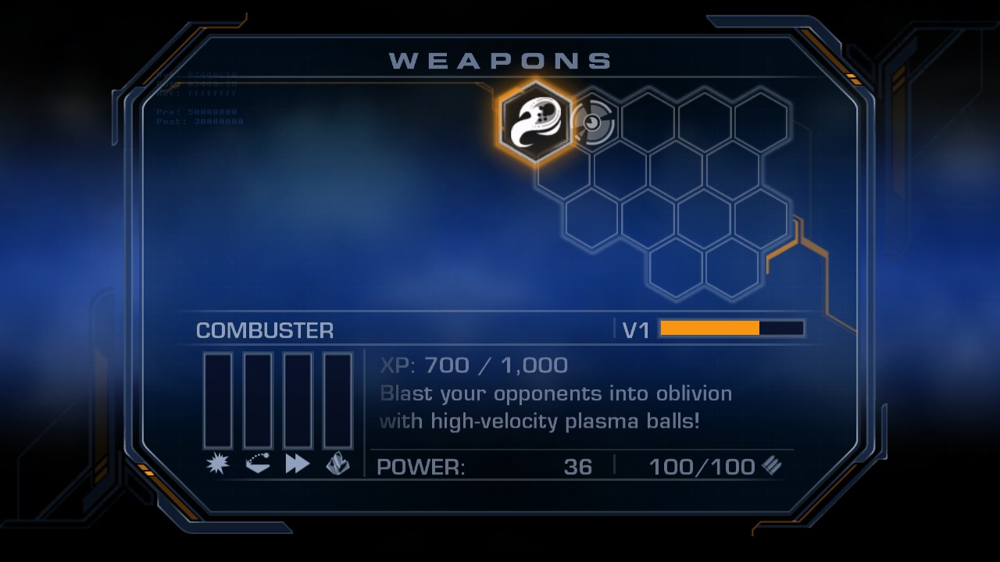

A recompilation, not an emulator
Ratchet Retooled translates the PS3 game's PowerPC and SPU code into C++ ahead of time and compiles it into an ordinary PC program. A small runtime stands in for the PS3's system libraries, and a Vulkan renderer draws what the PS3's graphics chip would have. No emulator, no JIT.
Features
Everything the PS3 version has, plus the things a PC should have.
Windows & Linux
Native x86-64 builds with Vulkan 1.3. Keyboard or any SDL2 gamepad, with rumble.
Up to 4x resolution
Supersampling from 1280x720 up to 5120x2880, FXAA, 16x anisotropic filtering and soft shadows.
High frame rate
30 fps like the PS3, the game's own 60 fps mode, or any cap up to 240. Uncapped too.
Ultrawide
16:9, 21:9 and 32:9 aspect ratios.
Split-screen co-opexperimental
A second Ratchet on a second controller. Shared weapons, bolts and XP; D-pad Down teleports to your partner.
Cheat & debug menu
God mode, infinite ammo, every weapon and upgrade, level warp, no clip, free camera, photo mode, slow motion, practice tools.
Weapon XP
The weapons page shows each weapon's exact XP and what its next level needs.
Saves
Normal in-game saves, stored as plain folders. Same layout as RPCS3, so you can bring your saves along.
Mods
Dump and replace textures, override any game file from a mods folder, export models to Blender.
Screenshots
Click a screenshot to see it full size.



Install
There are no ready-made downloads: a built program contains the game's own code, so everyone builds their own from their own copy. Three steps, about 15 minutes, most of it waiting for the compiler.
Dump your game
- The game folder. Dump your disc with a PS3 running custom firmware (multiMAN, webMAN MOD,
IRISMAN), or with a compatible Blu-ray drive and
ps3-disc-dumper. You get a folder with
PS3_GAMEinside. A decrypted ISO of your disc works too: extract it with 7-Zip. - A decrypted
EBOOT.elf. In RPCS3, choose Utilities > Decrypt PS3 Binaries, pickPS3_GAME/USRDIR/EBOOT.BIN, and save the result asEBOOT.elfin the same folder.
It must be the v1.00 disc EBOOT, not an update: 10,923,400 bytes, SHA-256
0ee9a8414c8fc182bc19fa2a523e6d050d0be76138b3733ae515798d77d2468c.
My TOD folder/
PS3_GAME/
USRDIR/
EBOOT.BIN
EBOOT.elf <- you made this
packed/ ...
Build
Install MSYS2 (default folder C:\msys64), then open
MSYS2 UCRT64 from the Start menu and run:
# tools and libraries pacman -S --needed git python mingw-w64-ucrt-x86_64-gcc mingw-w64-ucrt-x86_64-cmake \ mingw-w64-ucrt-x86_64-ninja mingw-w64-ucrt-x86_64-SDL2 mingw-w64-ucrt-x86_64-vulkan-headers \ mingw-w64-ucrt-x86_64-vulkan-loader mingw-w64-ucrt-x86_64-shaderc mingw-w64-ucrt-x86_64-zlib # the source git clone https://github.com/JackyPendrag0n/ratchet-retooled.git cd ratchet-retooled # C++ from YOUR EBOOT (C:\Games\... is written /c/Games/...) python ppu_codegen.py "/c/Games/My TOD folder/PS3_GAME/USRDIR/EBOOT.elf" gen python spu_codegen.py "/c/Games/My TOD folder/PS3_GAME/USRDIR/EBOOT.elf" gen_spu # build (add -j 2 to the second line if you run out of memory) cmake -S . -B build -G Ninja cmake --build build # copy the DLLs next to tod.exe ldd build/tod.exe | grep -i ucrt64 | awk '{print $3}' | xargs -I{} cp {} build/
Copy tod.exe and the .dll files from build next to your game
folder. Visual Studio's compiler is not supported.
# Ubuntu / Debian / Mint / Pop!_OS sudo apt install git cmake ninja-build g++ python3 libsdl2-dev libvulkan-dev libshaderc-dev zlib1g-dev # Fedora sudo dnf install git cmake ninja-build gcc-c++ python3 SDL2-devel vulkan-loader-devel libshaderc-devel zlib-devel # Arch / Manjaro / SteamOS desktop sudo pacman -S git cmake ninja gcc python sdl2 vulkan-icd-loader vulkan-headers shaderc zlib git clone https://github.com/JackyPendrag0n/ratchet-retooled.git cd ratchet-retooled python3 ppu_codegen.py "/path/to/My TOD folder/PS3_GAME/USRDIR/EBOOT.elf" gen python3 spu_codegen.py "/path/to/My TOD folder/PS3_GAME/USRDIR/EBOOT.elf" gen_spu cmake -S . -B build -G Ninja cmake --build build # add -j 2 if you run out of memory
Your game is build/tod. You need GCC 13+ or Clang 16+.
Play
Put tod / tod.exe next to your game folder and start it. It finds the game by
itself and creates tod-data (settings, log) and TOD Saves beside itself.
Games/ My TOD folder/ <- PS3_GAME is in here tod.exe <- plus the .dll files on Windows tod-data/ <- settings.ini, caches, the log TOD Saves/ <- your saves
Or point it at everything yourself:
tod "/path/to/EBOOT.elf" --game "/path/to/My TOD folder" --data ./tod-data
Playing
Gamepads just work. Press F1 (or L3+R3) any time for cheats and graphics settings; most changes
apply instantly. Everything is also in tod-data/settings.ini.
| Keyboard | PS3 |
|---|---|
| W A S D | left stick |
| I J K L | right stick |
| arrow keys | D-pad |
| Space / C / F / R | Cross / Circle / Square / Triangle |
| Q / E · 1 / 3 | L1 / R1 · L2 / R2 |
| Enter / Tab | Start / Select |
| F1 | cheat, debug and settings menu |
| F11 / F12 | fullscreen / screenshot |
| F2 / F4 / F5 / F9 | slow motion / photo mode / save / restore position |
Co-op
Tick Two players, split screen in F1 > Fun, or set coop = true. The second
controller is player 2 (with one controller, the keyboard is player 1). Still experimental: player 2
respawns can crash, and cutscenes and vehicles only know player 1.
Saves
Each save is a BCUS98127_SAVE_<n> folder in TOD Saves, the same layout
RPCS3 uses, so you can copy saves between the two.